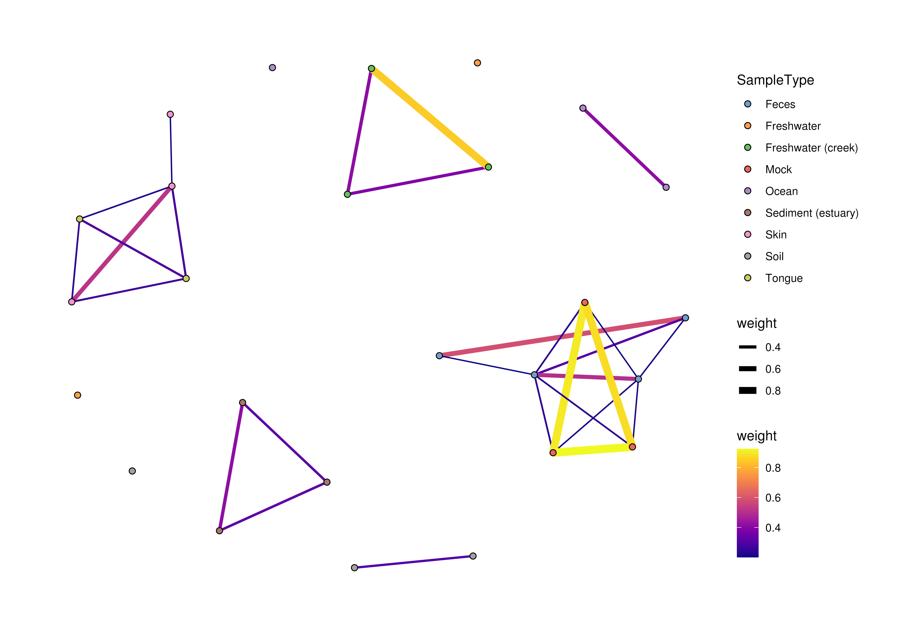
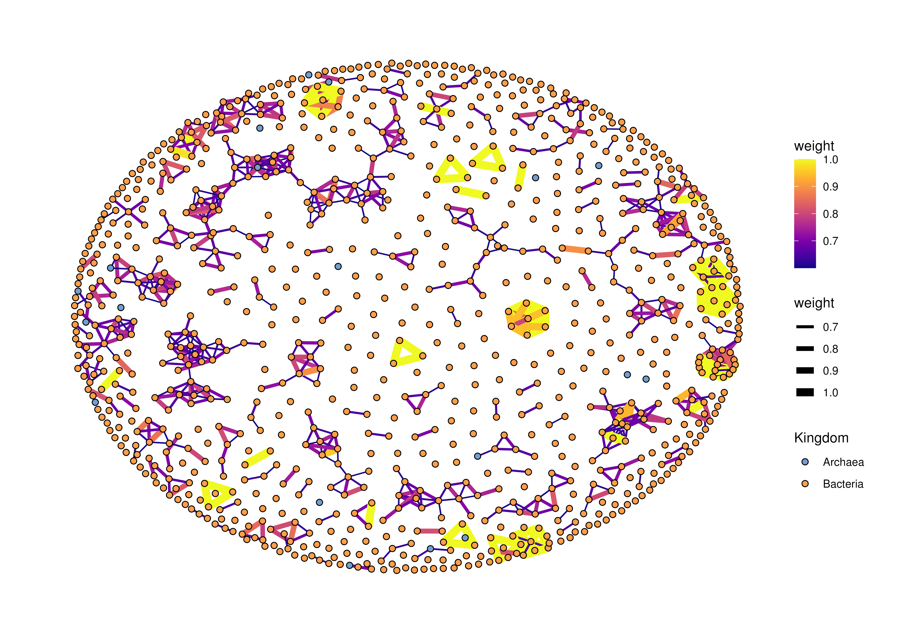
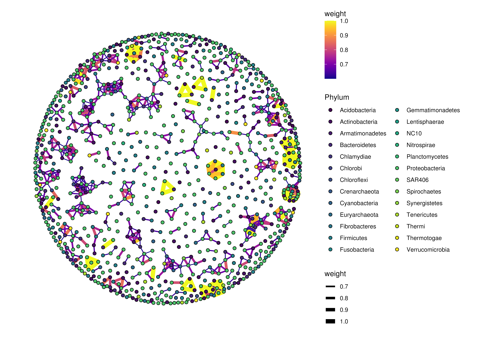

Plotting igraph objects with information from a SummarizedExperiment
plotGraph.RdplotGraph plots an igraph object with additional information
matched from a SummarizedExperiment object for the nodes only.
Information on the edges have to provided manually.
plotColGraph(x, y, ...) plotRowGraph(x, y, ...) # S4 method for ANY,SummarizedExperiment plotColGraph( x, y, show_label = FALSE, add_legend = TRUE, layout = "kk", edge_type = c("fan", "link", "arc", "parallel"), edge_colour_by = NULL, edge_width_by = NULL, colour_by = NULL, shape_by = NULL, size_by = NULL, by_exprs_values = "counts", other_fields = list(), ... ) # S4 method for SummarizedExperiment,missing plotColGraph(x, y, name = "graph", ...) # S4 method for ANY,SummarizedExperiment plotRowGraph( x, y, show_label = FALSE, add_legend = TRUE, layout = "kk", edge_type = c("fan", "link", "arc", "parallel"), edge_colour_by = NULL, edge_width_by = NULL, colour_by = NULL, shape_by = NULL, size_by = NULL, by_exprs_values = "counts", other_fields = list(), ... ) # S4 method for SummarizedExperiment,missing plotRowGraph(x, y, name = "graph", ...)
Arguments
| x, y | a graph object and a
|
|---|---|
| ... | additional arguments for plotting. |
| show_label |
|
| add_legend | logical scalar. Should legends be plotted?
(default: |
| layout | layout for the plotted graph. See
|
| edge_type | type of edge plotted on the graph. See
|
| edge_colour_by | Specification of a edge metadata field to use for setting colours of the edges. |
| edge_width_by | Specification of a edge metadata field to use for setting width of the edges. |
| colour_by | Specification of a column metadata field or a feature to
colour graph nodes by, see the by argument in
|
| shape_by | Specification of a column metadata field or a feature to
shape graph nodes by, see the by argument in
|
| size_by | Specification of a column metadata field or a feature to
size graph nodes by, see the by argument in
|
| by_exprs_values | A string or integer scalar specifying which assay to
obtain expression values from, for use in point aesthetics - see the
|
| other_fields | Additional fields to include in the node information without plotting them. |
| name | If |
Details
:
Internally tidygraph and ggraph are used. Therefore, all
graph types which can be converted by tidygraph::as_tbl_graph can
be used.
Examples
# data setup library(mia) data(GlobalPatterns) data(col_graph) data(row_graph) data(row_graph_order) metadata(GlobalPatterns)$col_graph <- col_graph genus <- agglomerateByRank(GlobalPatterns,"Genus",na.rm=TRUE) metadata(genus)$row_graph <- row_graph order <- agglomerateByRank(genus,"Order",na.rm=TRUE) metadata(order)$row_graph <- row_graph_order # plot a graph independently plotColGraph(col_graph, genus, colour_by = "SampleType", edge_colour_by = "weight", edge_width_by = "weight", show_label = TRUE)# plot the graph stored in the object plotColGraph(genus, name = "col_graph", colour_by = "SampleType", edge_colour_by = "weight", edge_width_by = "weight")# plot a graph independently plotRowGraph(row_graph, genus, colour_by = "Kingdom", edge_colour_by = "weight", edge_width_by = "weight")# plot the graph stored in the object plotRowGraph(genus, name = "row_graph", colour_by = "Phylum", edge_colour_by = "weight", edge_width_by = "weight")# plot a graph independently plotRowGraph(row_graph_order, order, colour_by = "Kingdom", edge_colour_by = "weight", edge_width_by = "weight")# plot the graph stored in the object and include some labels plotRowGraph(order, name = "row_graph", colour_by = "Phylum", edge_colour_by = "weight", edge_width_by = "weight", show_label = c("Sulfolobales","Spirochaetales", "Verrucomicrobiales"))# labls can also be included via selecting specific rownames of x/y plotRowGraph(order, name = "row_graph", colour_by = "Phylum", edge_colour_by = "weight", edge_width_by = "weight", show_label = c(1,10,50))# labls can also be included via a logical vector, which has the same length # as nodes are present label_select <- rep(FALSE,nrow(order)) label_select[c(1,10,50)] <- TRUE plotRowGraph(order, name = "row_graph", colour_by = "Phylum", edge_colour_by = "weight", edge_width_by = "weight", show_label = label_select)